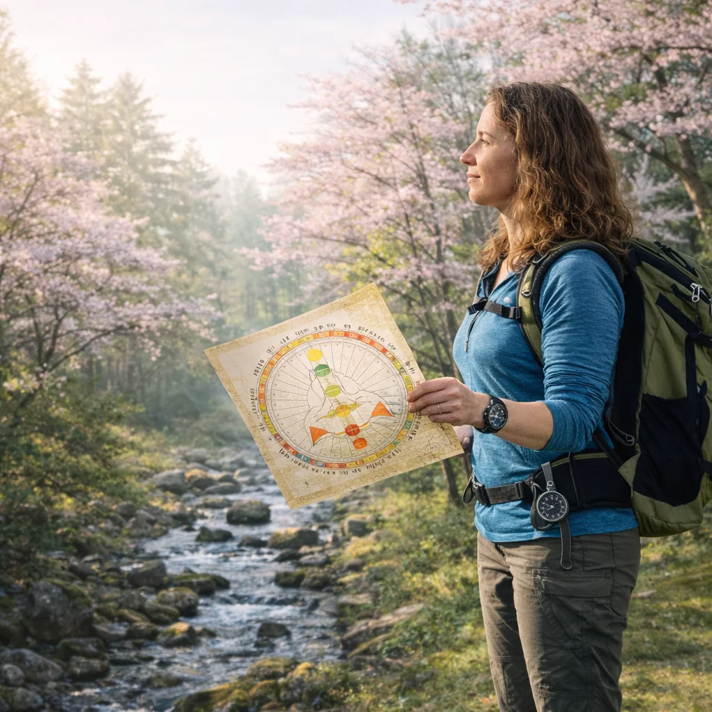

Move Like You're Meant To
Live Human Design Workshops
These aren't lectures. They're experiences. You'll play, laugh, discover things about yourself you couldn't have found alone, and leave with language that changes how you move through the world.
Workshops cover Human Design essentials: Type, Strategy, Authority, and how to actually live your design — not just understand it intellectually.
Date:TBD
Location: White Rabbit, 5 N. Main St. Ashland, OR
Price: $25
Format: Workshop
